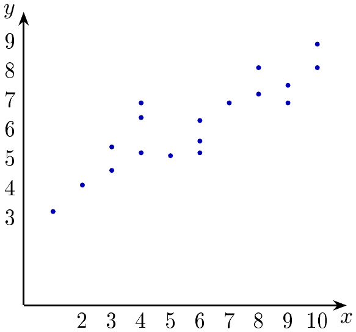
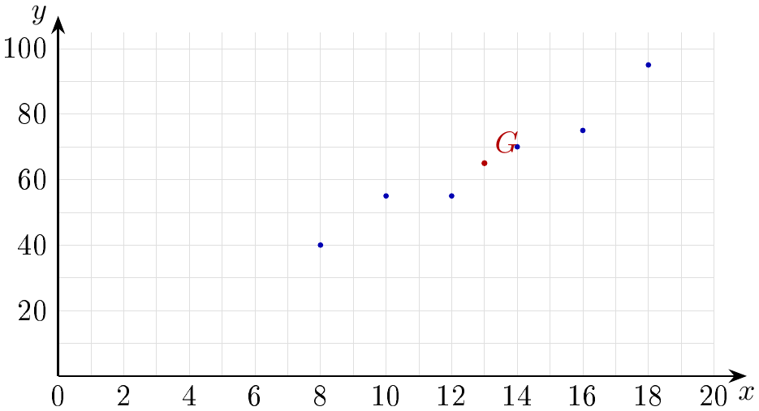
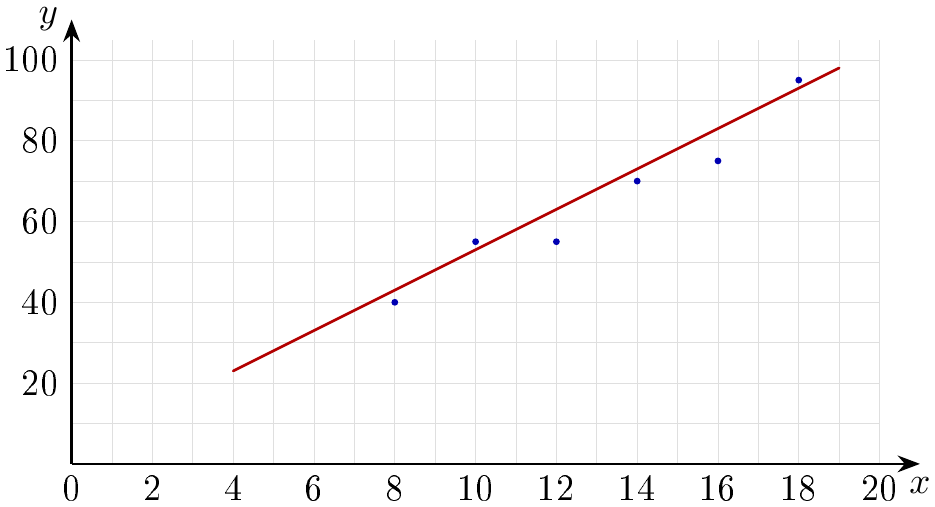
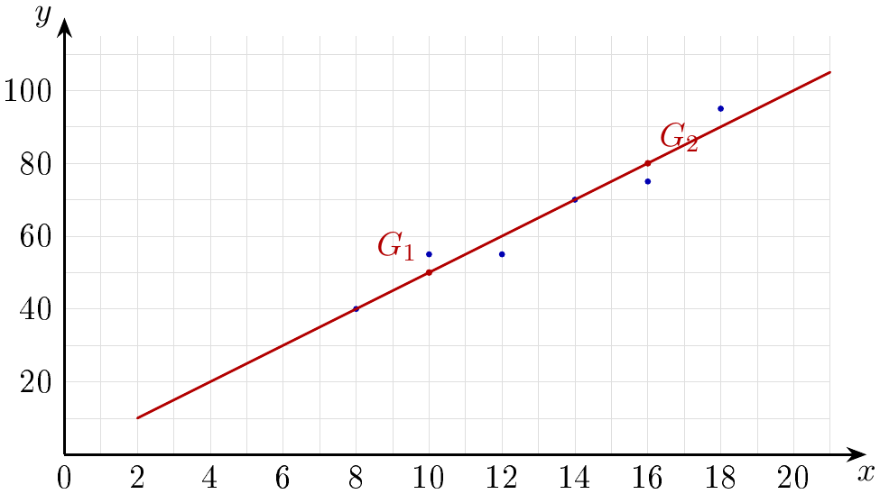
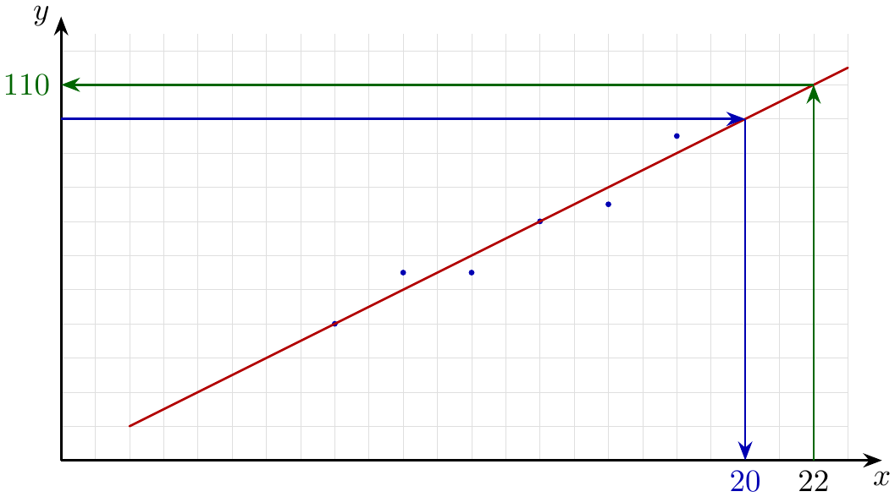
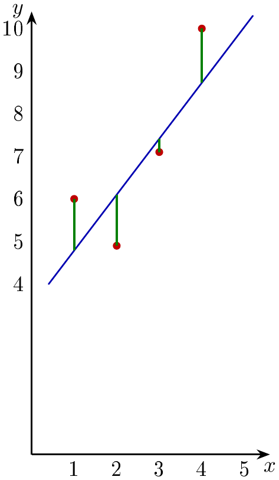
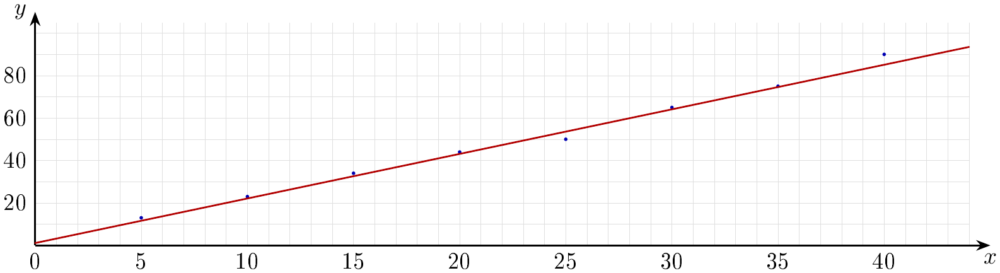
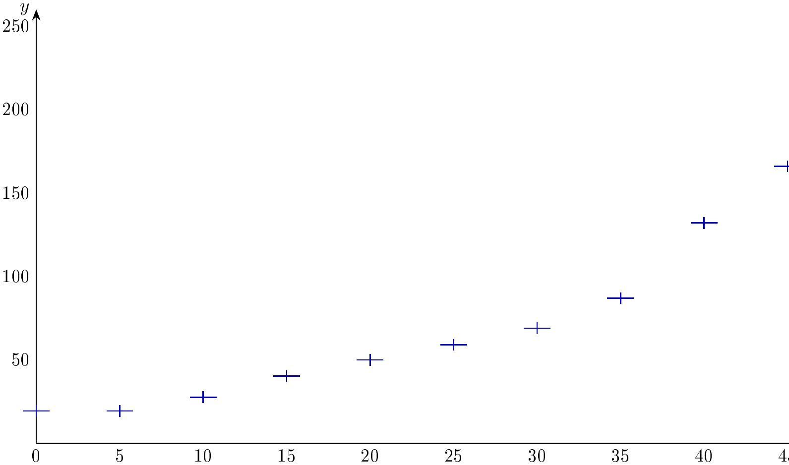
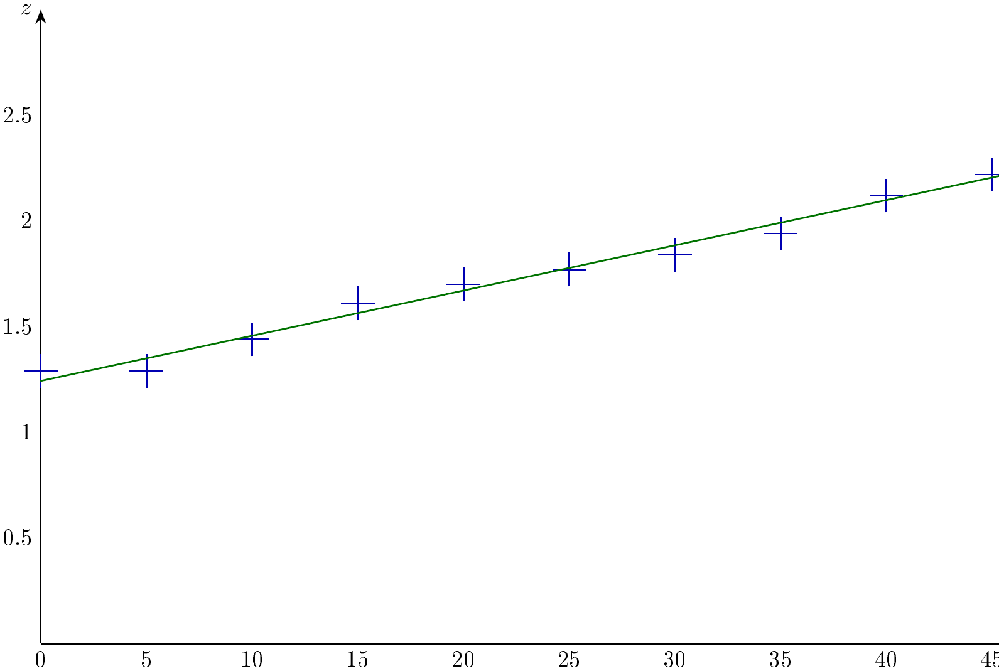
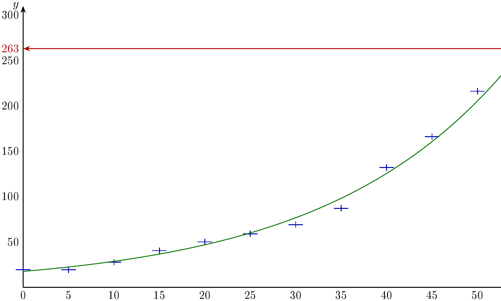

Chapitre VI : Statistique à deux variables
Terminale complémentaire · Chapitre 6 — Statistique à deux variables · cours de Frederik de Peyrelongue
I. Tableau d'effectifs – Nuage de points
On considère deux caractères simultanément : $x$ et $y$, dont on donne les données dans un tableau d'effectifs.
| $x_{i}$ | $x_{1}$ | $x_{2}$ | $\dots$ | $x_{p}$ |
| $y_{i}$ | $y_{1}$ | $y_{2}$ | $\dots$ | $y_{p}$ |
Ces données peuvent être représentées par un nuage de points de coordonnées $(x_{i}\,;y_{i})$.
L'ensemble des points $M_{i}$ de coordonnées $(x_{i}\,;y_{i})$ est appelé nuage de points associé à la série statistique $(x_{1}\,;y_{1}),(x_{2}\,;y_{2}),\dots,(x_{n}\,;y_{n})$ à deux variables.

Le point $G$ de coordonnées $(\overline{x}\,;\overline{y})$, où $\overline{x}$ et $\overline{y}$ sont les moyennes respectives des $x_{i}$ et des $y_{i}$, est appelé le point moyen du nuage de points associé à la série.
Le tableau suivant présente l'évolution du budget publicitaire et du chiffre d'affaires d'une société au cours des $6$ dernières années :
| Budget publicitaire en milliers d'euros $x_{i}$ | $8$ | $10$ | $12$ | $14$ | $16$ | $18$ |
| Chiffre d'affaire en milliers d'euros $y_{i}$ | $40$ | $55$ | $55$ | $70$ | $75$ | $95$ |
- Dans un repère, représenter le nuage de points $(x_{i}\,;y_{i})$.
- Déterminer les coordonnées du point moyen $G$ du nuage de points.
Correction. On a représenté ci-dessous le nuage de points de la série $(x_{i}\,;y_{i})$.
Le point moyen $G$ du nuage de points a pour coordonnées $(13\,;65)$. On peut placer ce point dans le repère.

II. Ajustement affine
Dans certaines situations, le nuage de points semble donner un ensemble de points presque alignés. On va alors dans ces cas faire un ajustement affine, c'est-à-dire trouver une droite d'équation $y=ax+b$ qui permet de représenter cette série.
II.1 Interpolation, extrapolation
L'objectif est, à partir des valeurs d'une série statistique à deux variables, d'obtenir des approximations pour des valeurs inconnues de cette série.
Quelle serait le budget publicitaire pour un chiffre d'affaires de $80$ Mio ?
Ici, on est dans le domaine d'étude de la série : le chiffre d'affaires a été étudié entre $40$ Mio et $95$ Mio. L'estimation que l'on donnera sera une interpolation.
Quelle serait le budget publicitaire pour un chiffre d'affaires de $100$ Mio ?
Ici, on est en dehors du domaine d'étude de la série. L'estimation que l'on donnera sera une extrapolation.
L'interpolation et l'extrapolation sont des méthodes qui consistent à estimer une valeur inconnue dans une série statistique.
- Pour une interpolation, le calcul est réalisé dans le domaine d'étude fourni par les valeurs de la série.
- Pour une extrapolation, le calcul est réalisé en dehors du domaine d'étude.
Remarque. La méthode d'extrapolation est parfois contestable, car en dehors du domaine d'étude fourni par les valeurs de la série, rien ne nous assure que le modèle mathématique mis en œuvre soit encore valable.
II.2 Droite d'ajustement
Pour obtenir de telles estimations, il faudra déterminer une droite passant « le plus près possible » des points du nuage.
L'interpolation ou l'extrapolation consiste à effectuer l'estimation par lecture graphique sur la droite ou par calcul à l'aide de l'équation de la droite.
Lorsque les points d'un nuage sont sensiblement alignés, on peut construire une droite, appelée droite d'ajustement (ou droite de régression), passant « au plus près » de ces points.

II.3 Méthode à main levée
Sans technique particulière, on trace « au jugé » une droite passant « au plus près » des points du nuage, puis on détermine l'équation de cette droite $y=ax+b$.
On peut alors utiliser cette droite pour faire des estimations de valeur théorique de $y$ pour $x=9$, par exemple.
II.4 Méthode des points moyens (ajustement de Mayer)
Cet ajustement consiste à déterminer la droite passant par deux points moyens du nuage de points.
Déterminer la droite d'ajustement par la méthode des points moyens. On reprend les données du paragraphe I.
Soit $G_{1}$ le point moyen associé aux trois premiers points du nuage et $G_{2}$ le point moyen associé aux trois derniers points du nuage.
- Calculer les coordonnées de $G_{1}$ et $G_{2}$.
- On prend $(G_{1}G_{2})$ comme droite d'ajustement. Tracer cette droite.
À l'aide du graphique :
- Estimer le chiffre d'affaire à prévoir pour un budget publicitaire de $22\,000$ \euro.
- Estimer le budget publicitaire qu'il faudrait prévoir pour obtenir un chiffre d'affaire de $100\,000$ \euro.
- La méthode utilisée dans les questions 2a et 2b consiste-t-elle en une interpolation ou une extrapolation ?
Correction.
1) a)
Le point moyen $G_{1}$ a pour coordonnées $(10\,;50)$.
Le point moyen $G_{2}$ a pour coordonnées $(16\,;80)$.
b) La droite $(G_{1}G_{2})$ a pour coefficient directeur $\dfrac{80-50}{16-10}=5$, donc pour équation $y=5x$.

2) On lit graphiquement :
a) Le chiffre d'affaires à prévoir pour un budget publicitaire de $22\,000$ \euro{} est de $110\,000$ \euro.
b) Le budget publicitaire qu'il faudrait prévoir pour obtenir un chiffre d'affaire de $100\,000$ \euro{} est de $20\,000$ \euro.

c) Les lectures graphiques sont réalisées ici en dehors du domaine d'étude : on parle donc d'extrapolation.
II.5 Méthode des moindres carrés
Cette méthode porte le nom de « moindres carrés » car elle consiste à rechercher la position de la droite d'ajustement telle que la somme des carrés des longueurs donnant les distances respectives entre la droite et les points soit minimale.
Le principe consiste donc à déterminer les coefficients $a$ et $b$ d'une droite d'équation $y=ax+b$ de sorte qu'elle passe le « plus près possible » des points du nuage.
Pour chaque abscisse $x_{i}$, on calcule la distance $M_{i}P_{i}$ entre le point du nuage et le point de la droite, soit :
Il s'agit dans ce cas de la droite d'ajustement de $y$ en $x$.
Dans la méthode des moindres carrés, on recherche $a$ et $b$ pour lesquels la somme des carrés des distances est minimale, soit :
est minimale.

Déterminer la droite d'ajustement par la méthode des moindres carrés.
On considère la série statistique à deux variables données dans le tableau suivant :
| $x_{i}$ | $5$ | $10$ | $15$ | $20$ | $25$ | $30$ | $35$ | $40$ |
| $y_{i}$ | $13$ | $23$ | $34$ | $44$ | $50$ | $65$ | $75$ | $90$ |
- Dans un repère, représenter le nuage de points $(x_{i}\,;y_{i})$.
a) À l'aide de la calculatrice, déterminer une équation de la droite d'ajustement par la méthode des moindres carrés.
b) Représenter la droite d'ajustement de $y$ en $x$.
- Estimer graphiquement la valeur de $x$ pour $y=70$. Retrouver ce résultat par calcul. S'agit-il d'une interpolation ou d'une extrapolation ?
Correction.
1) et 2) b)

2) a)
Avec TI :
- Appuyer sur « STATS » puis « Édite » et saisir les valeurs de $x$ dans L1 et les valeurs de $y$ dans L2.
- Appuyer à nouveau sur « STATS » puis « CALC » et « RegLin(ax+b) ».
- Saisir L1,L2.
Avec CASIO :
- Aller dans le menu « STAT ».
- Saisir les valeurs de $x$ dans List1 et les valeurs de $y$ dans List2.
- Sélectionner « CALC » puis « SET ».
- Choisir List1 pour 2Var XList et List2 pour 2Var YList puis « EXE ».
- Sélectionner « REG » puis « X » et « aX+b ».
La calculatrice nous renvoie : $a=2{,}138095238$ et $b=1{,}142857143$.
Une équation de la droite d'ajustement est :
Pour tracer la droite, il suffit de calculer les coordonnées de deux points de la droite d'ajustement :
- si $x=0$, alors $y=2{,}1\times0+1{,}1=1{,}1$ : le point de coordonnées $(0\,;1{,}1)$ appartient à la droite d'ajustement ;
- si $x=10$, alors $y=2{,}1\times10+1{,}1=22{,}1$ : le point de coordonnées $(10\,;22{,}1)$ appartient à la droite d'ajustement.
3) Pour $y=70$, on lit graphiquement $x\approx33$.
Par le calcul, si $y=70$, alors $70=2{,}1x+1{,}1$, soit $2{,}1x=70-1{,}1$, c'est-à-dire $2{,}1x=68{,}9$, donc
Les calculs sont réalisés dans le domaine d'étude : on parle donc d'interpolation.
III. Ajustement par changement de variable
Lorsque le nuage de points n'est à priori pas modélisable par une droite, on peut réaliser un ajustement linéaire en effectuant un changement de variable.
Effectuer un ajustement se ramenant par changement de variable à un ajustement affine.
On a relevé la population d'une grande métropole sur $50$ ans tous les $5$ ans. Les résultats sont présentés dans le tableau suivant :
| Année $x_{i}$ | $0$ | $5$ | $10$ | $15$ | $20$ | $25$ | $30$ | $35$ | $40$ | $45$ | $50$ |
| Population en milliers $y_{i}$ | $19{,}4$ | $19{,}4$ | $27{,}6$ | $40{,}3$ | $50$ | $59$ | $69$ | $87$ | $132$ | $166$ | $216$ |
- Représenter le nuage de points dans un repère.
a) On effectue le changement de variable $z=\log y$. Réaliser un nouveau tableau présentant les valeurs prises par les variables $x$ et $z$.
b) Représenter un nouveau nuage de points à partir des données des variables $x$ et $z$.
c) À l'aide de la calculatrice, déterminer une équation de la droite d'ajustement de $z$ en $x$ par la méthode des moindres carrés. Représenter la droite d'ajustement.
a) En déduire la relation qui lie $y$ et $x$, puis tracer la courbe représentative de la fonction $f$ définie par $y=f(x)$ dans le repère contenant le premier nuage de points.
b) En admettant que le modèle mathématique reste valable en dehors du domaine d'étude, extrapoler le nombre d'habitants $5$ ans après l'étude.
Correction.
1)

2) a)
| $x_{i}$ | $0$ | $5$ | $10$ | $15$ | $20$ | $25$ | $30$ | $35$ | $40$ | $45$ | $50$ |
| $z_{i}=\log y_{i}$ | $1{,}29$ | $1{,}29$ | $1{,}44$ | $1{,}61$ | $1{,}7$ | $1{,}77$ | $1{,}84$ | $1{,}94$ | $2{,}12$ | $2{,}22$ | $2{,}33$ |
b) et c) Une équation de la droite d'ajustement est :

RegLin
$y=ax+b$
$a=0.0213818182$
$b=1.242727273$
$r^{2}=0.9883906748$
$r=0.9941783918$
3) a) On a : $z=0{,}0214x+1{,}2427$ et $z=\log y$, soit :
Donc
est l'expression de la fonction permettant d'ajuster le nuage de points $(x_{i}\,;y_{i})$. On trace la courbe de $f$ ci-dessous.

b)
On peut supposer que $5$ années après la fin de l'étude, la population de la ville sera proche de $263\,000$ habitants.